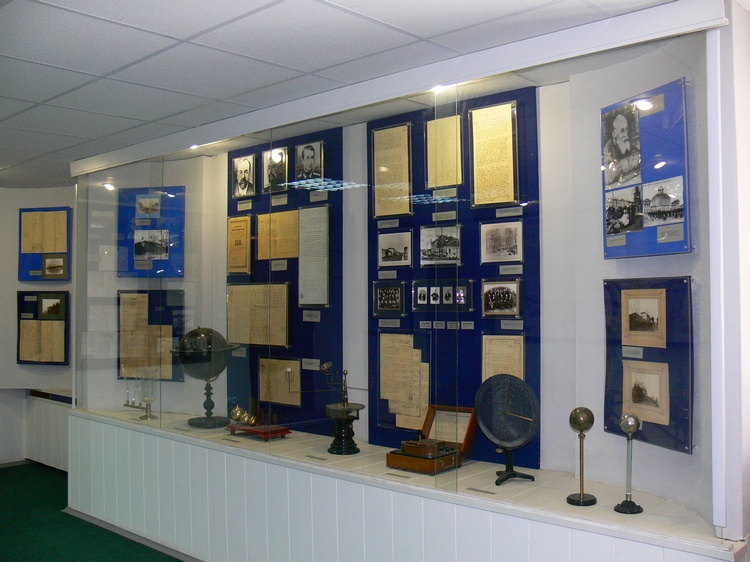

-


In the historical center of the county town of Vyatka on Preobrazhenskaya Street 160 years ago in 1858, a large semi-stone wing with a mezzanine was built by the efforts of the merchants Shuravins. The building was rented out, and from 1873 to 1878 the family of the great Russian scientist, the founder of cosmonautics Konstantin Eduardovich Tsiolkovsky lived here.
On April 10, 1988, the grand opening of the Museum of K. E. Tsiolkovsky, Aviation and Cosmonautics took place in this historic building. Viktor Petrovich Savinykh, a pilot-cosmonaut of the USSR, twice Hero of the Soviet Union, Alexander Alexandrovich Serebrov, a pilot-cosmonaut of the USSR, Hero of the Soviet Union, great-grandchildren and granddaughter of K. E. Tsiolkovsky took part in the opening ceremony. In 1989, the first Youth Tsiolkovsky Readings were held, which later became an all-Russian forum, where schoolchildren and students from all regions of Russia present their research works. In 2007, a bust of V. P. Savinykh was installed on the territory of the museum.
In December 2014, at the initiative of V. P. Savinykh, the construction of the second building of the Museum — a modern museum institution with new exhibition halls, areas for storing exhibits, and a digital planetarium - began. The grand opening of the Children's Space Center was on March 13, 2018.

The museum collection was founded in 1988, and by the beginning of 2020 it had reached 12 057 thousand items. The samples of space technology, material relics, documents, newspapers, photographs and negatives, audio and video recordings, postage stamps, paintings and art printing are kept in the museum. Most of the exhibits are received by donation to the funds. The exposition also includes works of art of various genres on the theme of space.